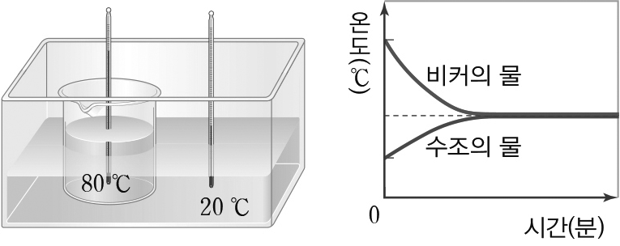

1번
다음은 20℃ 물이 담긴 수조에 80℃ 물이 담긴 비커를 넣었을 때, 온도 변화를 알아보는 실험입니다.위 실험 결과에 대한 설명 중 ㉠, ㉡, ㉢에 들어갈 말로 알맞은 것을 고르세요.

수조 안에 20℃인 물의 온도는 ㉠
선택하세요.
높아지고
낮아지고
, 비커 안에 80℃도인 물의 온도는 ㉡
선택하세요.
높아진다
낮아진다
.
시간이 지나면 수조 안에 물과 비커 안에 있는 두 물의 온도는 ㉢
선택하세요.
같아집니다
차이가 커집니다
.